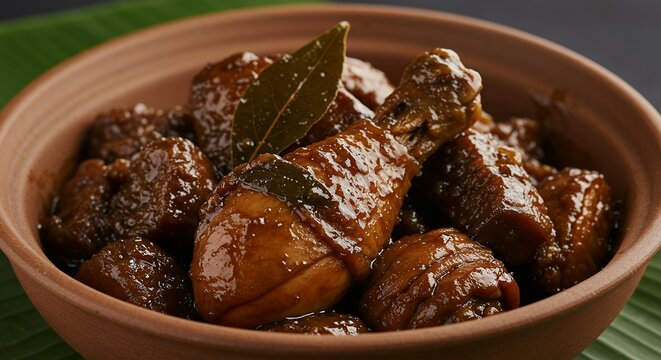

Home
Chicken Adobo

Description
Adobo is a classic Filipino dish made with chicken or pork marinated in vinegar, soy sauce, garlic, and spices. It is known for its savory and slightly tangy flavor.
Ingredients
- 2 lbs chicken, cut into pieces
- 1/2 cup soy sauce
- 1/2 cup vinegar
- 1 head garlic, minced
- 2-3 bay leaves
- 1 teaspoon black peppercorns
- 1 tablespoon oil for frying
- Salt to taste
Instructions
- In a bowl, combine the chicken pieces with soy sauce, vinegar, minced garlic, bay leaves, and black peppercorns. Marinate for at least 30 minutes.
- In a large pan, heat oil over medium heat. Add the marinated chicken along with the marinade.
- Cook the chicken until it is browned on all sides.
- Reduce the heat to low, cover the pan, and simmer for about 30-40 minutes, or until the chicken is tender and the sauce has thickened.
- Season with salt to taste, and adjust the sauce consistency by adding a little water if necessary.
- Serve hot with steamed rice.